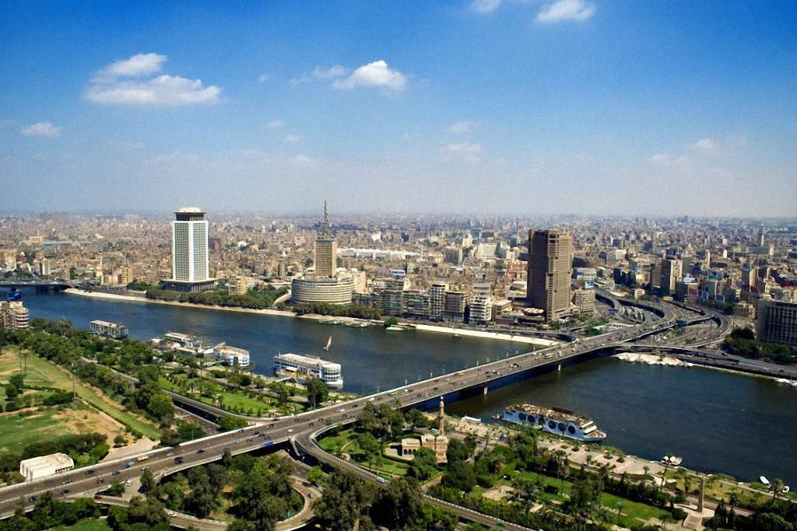

|
 | ||
|
|
Мегаполис – это город с населением более 1 миллиона человек. Мегаполисы образуются в результате срастания двух соседних городов, и эти части связываются между собой общей экономикой и инфраструктурой. Как правило, плотность населения в мегаполисе очень высокая. Главной формой расселения людей в современном мире постепенно становятся города.
Крупные города важны для культурного развития мира по следующим причинам: Наличие большой аудитории. В таких городах много туристов и представителей различных сфер бизнеса, что позволяет производителям культурных благ рассчитывать не только на местную аудиторию, но и на иностранных потребителей. Мощный сектор частного бизнеса. Он является одновременно источником финансирования сферы искусств и рынком для продуктов творческой деятельности. Постоянно меняющееся население и наличие международных связей. Это превращает крупные города в центры средоточия новых идей и знаний в сфере культуры, а также формирует «гибридные» жанры искусства, рождающиеся в процессе обмена опытом. Взаимодействие различных субкультур. Это позволяет сохранять передаваемые из прошлого в настоящее и из настоящего в будущее ценности, нормы, образцы поведения, которые способствуют воспроизводству городского образа жизни. Формирование новых и модных тенденций. Потенциал и достижения современного общества аккумулируются и интегрируются в унифицированный вид в крупных мегаполисах, там же формируются новые и модные тенденции.
Пример: Москва — столица России и крупнейший город страны. Это историческое, политическое и духовное сердце, полное достопримечательностей, музеев и культурных памятников. Город сочетает древние крепости с современными небоскребами и предлагает богатую театральную и музейную жизнь. С возрастом около девяти веков, Москва поражает своей динамикой и разнообразием: от соборов до уютных кафе и модных клубов. Здесь каждый найдет что-то для себя!